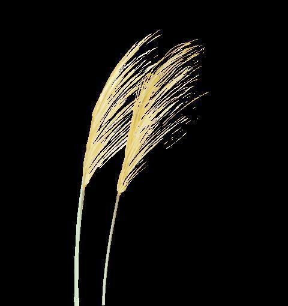
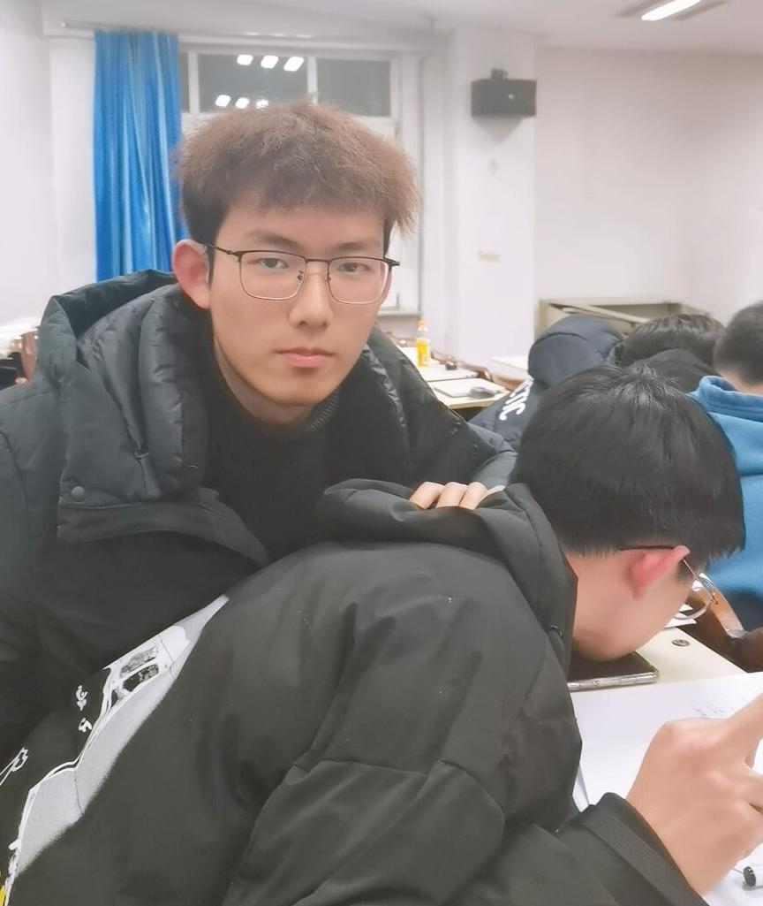

外联部—拉赞助的小能手
电子技术与应用协会—外联部
外联部的职能

活动赞助拉取
赞助策划撰写
与其他社团沟通联谊
社团物品借还
陪 伴❤ 电 协
陪伴
不舍
18级霍英豪
嘻嘻哈哈小能手
不知名东北野王
外联是一个人有温度的部门，希望大家都可以在社团收获自己想要的东西
也希望外联可以在社团中发挥更大作用
最后欢迎新的学弟学妹加入电协
坚守
奋斗
电协 外联部—孙彤
辽宁鞍山
19级信息学院电子信息技术科学与技术专业
平时喜欢听歌 爱看剧 爱拍照
欢迎包被们来到电协这个伐木累中 爱宁们
坚持
不悔
大家好，我叫于芷川， 现是 一名大二学生，来自辽宁本溪，喜欢社交，擅长各类电脑软件，钟爱王者，很高兴加入电协外联部，外联部让我收获了很多，从不善言谈变得开朗外向，欢迎大家加入电协这个大家庭。
不忘
初心
19级董峻昊，在电协学到了很多，也交到很多朋友，希望电协越来越好，无悔青春，无悔电协！！
初 遇❤ 电 协
你好
电协
我是经济管理学院会计专 业的张景子，天秤女，能说会道，爱好，，，爱好干饭，外冷内热，然后很幸运可以加入电协外联部，认识这么多帅哥美女。
相约
电协
大家好，我是来自20级计算机二班的韩明芷，来自辽宁阜新，本人性格外向随和活泼开朗，擅长与人交往。
你好
电协

嗨大家好，我是刘云琦 本人性别男，2002年出生，无婚史，现居沈阳理工大学。性格开朗。为人真诚，健康状况良好，各个部位器官运作正常，辽宁沈阳人，就业于沈阳理工大学电子技术与应用协会外联部，事业有待发展。
相约
我是电协外联部的新人鲁军博，刚步入大学，我就感受到了大学的美好，步入电协，更加体会到了电协的奇妙，欢迎大家可以来到电子技术与应用协会。电协欢迎每位同学的到来哦！
初心
我是来自电协外联部的 孙月，是个巨蟹座女孩，喜欢跳舞，打王者。很开心能够加入电协外联部这个大家庭。
心甘
情愿
我是来自计算机专业的徐子航，平时喜欢打打篮球，弹弹吉他（其实是个新手），很荣幸能加入沈理电协这个大家庭并且在外联部担任工作，相信自己一定可以做好本职工作。
排版|杜岑
图片|外联部